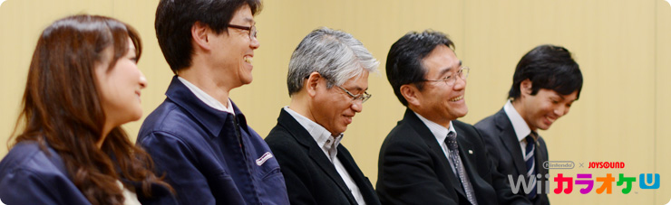

<div class="l-category-local-header">
<div class="category-local-header">
<div class="category-local-heading"><span>社長が訊く</span>
<div class="category-local-sub">IWATA ASKS


<div class="l-soft-topic-path is-block">
<div class="l-soft-topic-path-inner">
<div class="soft-topic-path">
<ul class="topic-path"><li class="topic-path-item"><span>『Wii U』 Nintendo×JOYSOUND Wii カラオケ U 篇</span></li></ul>


<div id="page-container">
<header class="interviewheader">
<h2 class="interviewheader__ttl"><span class="subtext">社長が訊く</span>『Wii U』</h2>

</header>
<div class="tabmenu-container">
<p class="tabmenu__ttl">シリーズ一覧
<ul class="tabmenu__body tabnum12">
<li class="tabmenu__item tab1">本体 篇</li>
<li class="tabmenu__item tab2">Wii U GamePad 篇</li>
<li class="tabmenu__item tab3">Miiverse プロデュース 篇</li>
<li class="tabmenu__item tab4">Miiverse 開発スタッフ 篇</li>
<li class="tabmenu__item tab5">インターネットブラウザー 篇</li>
<li class="tabmenu__item tab6">Wii U Chat 篇</li>
<li class="tabmenu__item tab7">New スーパーマリオブラザーズ U 篇</li>
<li class="tabmenu__item tab8">ZombiU（ゾンビU） 篇</li>
<li class="tabmenu__item tab9">Nintendo×JOYSOUND Wii カラオケ U 篇</li>
<li class="tabmenu__item tab10">Nintendo Land 篇</li>
<li class="tabmenu__item tab11">Nintendo TVii 篇</li>
<li class="tabmenu__item tab12">Wii Street U powered by Google 篇</li>
</ul>

<div class="hero-container">
<div class="hero__img">

<div class="interviewsubheader">
<div class="interviewsubheader__ttl"><h2>Nintendo×JOYSOUND Wii カラオケ U 篇</h2>

<div class="pageindex-container">
<p class="pageindex__ttl">目次
<ul class="pageindex__body">
<li class="pageindex__item">1. 撤退からのスタート</li>
<li class="pageindex__item">2. 相手が戦えない土俵で</li>
<li class="pageindex__item">3. “曲を選ぶ楽しみ”</li>
<li class="pageindex__item">4. 「歌い込み」</li>
<li class="pageindex__item active">5. 「記憶を探して」</li>
</ul>

<div class="interview-container">
<h3 class="interview__ttl">5. 「記憶を探して」</h3>

岩田
: 服部さんは、業務用のカラオケを<br>リビングに持ち込むうえで、<br>どんな工夫をしましたか？


服部
: 「任天堂がつくるカラオケとはどうあるべきなのか」<br>ということをしっかりと考えました。<br>あと今回、これまで開発してきたソフトと<br>大きく違うなと考えていたのは、<br>いままでのゲームソフトは、遊びたいから購入されるわけで、<br>つまり、｢ソフトを手に入れた瞬間から興味がある｣んです。<br>でも今回はプリインストールですから、<br>さわる方全員がこのソフトに興味がある<br>お客さんとは限らないんです。


岩田
: Wii Uを買ったら、ついてきちゃうわけですからね。


服部
: はい。ですので、カラオケに<br>もともと積極的でないお客さんにも、<br>「歌ったらどんなに楽しいか」を<br>いかに想像していただくかということに注力しました。<br>曲のリストを見たり、年代から検索したりすると、<br>やっぱり歌いたい気持ちになってくるんです。<br>いろいろとさわっているうちに<br>「歌うってやっぱり楽しい」と思ったり、<br>「あぁ、こんな曲よく聴いたよなぁ」とか、<br>曲と過去の経験を結びつけてほしいと思ったんです。


山上
: とくに『Wii カラオケ U』の場合、<br>歌手でも、曲名でも、テレビドラマでも、<br>とりあえず検索してみると、<br>ゲーム側が候補を探してくれます。


岩田
: いわば、日本のWii Uには<br>「標準で音楽データベースが内蔵されている」<br>ともいえますね。


山上
: 音質にもこだわっていて、<br>業務用の最新機種はＭＩＤＩなんですが<br>内蔵されている音源がすごくて<br>ほとんど生音に聴こえるんです。<br>でもそのままでは容量が大きすぎて<br>とても家庭用ゲーム機には入らないんですね。<br>そこで今回は「ＭＩＤＩの音を録音して使う」ことで、<br>業務用と同様の高品質を確保することができました。


岩田
: ちなみに、歌う画面でMiiが出てくるのは、<br>どのように決まったんですか？


山上
: えー、そこはですね（笑）。<br>わたしは昭和時代に青春を過ごしましたので、<br>カラオケの映像といえば<br>「ナゾのカップルが出会って別れるドラマ」<br>みたいなのが流れるというイメージしかなかったんです。<br>でも、服部さんに<br>「いや、そんなの古いです！」と言われて、<br>じつはかなりの議論になって・・・。


岩田
: そういうのを、<br>「ジェネレーションギャップ」といいます（笑）。


山上
: 最終的に、<br>すべての世代の方に受け入れていただけるように、<br>昔ながらのカラオケムービーも、Miiの映像も、<br>写真スライドショーも、ビジュアライザーも、<br>好きに選んでいただけるようになりました。


吉満
: おふたりとも、打ち合わせの場で<br>よくケンカされていましたよねぇ（笑）。


一同
: （笑）


服部
: あれ？ ケンカに見えてましたか。<br>ケンカじゃないですよ。議論です（笑）。<br>あんなに言うのは、山上さんに対してだけです。


岩田
: カラオケ観の違いについて、<br>熱い議論が繰りひろげられたんですね。<br>わたしは、先日のニンテンドーダイレクトのときに<br>自分のMiiが舞台上で踊っている映像（※26）を見ていて、<br>すごく不思議な感じがしました。

※26自分のMiiが舞台上で踊っている映像＝「Wii U本体機能 Direct 2012.11.7」で放映された映像のこと。


吉満
: カラオケは同じ場にいる人たちと楽しむものなので、<br>Miiの形でいっしょに踊っていると、<br>ダイレクトに一体感が伝わるんです。


服部
: それに、Miiとカラオケは映像以外でも相性がよくて、<br>お気に入りの曲や履歴を管理するときも便利だったんです。<br>人のMiiの履歴を覗き見ると、<br>新たな一面の発見があったりして楽しいですし（笑）。


山上
: でも、そんなに議論していたかなぁ？<br>大部分は合っていた気がするんだけど、<br>（吉満さんを見て）・・・ねえ？


吉満
: そういうことにしておきましょう。


一同
: （笑）


岩田
: では、最後に、できあがった手ごたえや<br>今後の展望について、お客さんへのメッセージなど、<br>服部さんからお願いします。


服部
: 今回、制作中、いつも以上にすっごく楽しかったんです。<br>ふだんと異なる業界の方とお仕事できましたし、<br>新たな発見があって、いい刺激になりました。<br>それに、Wii U本体やマイクを開発するハードウェアチームや、<br>内蔵メニューをつくるチームなどの社内の人たちとも<br>いっしょになって、本体の一部をつくれたところに、<br>プリインストールアプリケーションならではの<br>「苦労や楽しさ」があったなと思います。<br>そこが今回は、いままでと違う大きな手ごたえでした。<br>&nbsp;<br>でも、社内で「こうこうこういうソフトだから、<br>こういう機能が必要なんです」と、みなさんに説明するときに、<br>普通だったらとても苦労するんですが、<br>今回は、「カラオケ」という誰もが知っているコンテンツだから<br>共有するスピードがとても速かったんです。


岩田
: 「カラオケはこういうものだ」という共通認識が<br>最初からみんなの中にあるし、<br>楽しさも経験済みですから、<br>共有することがとても早かったんですね。


服部
: そのみなさんの中にある楽しい思い出を、<br>リビングでもう一度味わっていただければと思います。


岩田
: はい。では吉満さん。


吉満
: 今後、世界的に広がっていって、<br>「世界のカラオケになれたら」と思いますし、<br>単純に新しい楽しみかたが増えることを期待しています。<br>じつは今回を機に、はじめて家族でカラオケに行ってみたんです。<br>最初はみんなモジモジしていたんですけど、<br>いざ歌い出したら、けっこうのめり込めまして。


岩田
: カラオケって、不思議なんですよね。<br>堰（せき）を切ると楽しいんです。


吉満
: はい。母親世代の歌を聴いても、<br>「子供のころに聴いた歌だなぁ」<br>と思い出せて、新しい感覚が得られました。<br>最初は「恥ずかしい」と思うかもしれませんが、<br>ぜひ家族でカラオケにチャレンジしてみてください。


岩田
: はい。山上さん。


山上
: 今回は、いろんな方に協力いただけたからこそ、<br>「できたことが非常に大きかった」と思います。<br>その結果できあがった『Wii カラオケ U』は<br>「９０，０００曲以上」の曲が収録されています。<br>おそらく知っている曲はたいてい入っているので、<br>ぜひ、一度検索してみてください。


岩田
: はい、伊神さん。


伊神
: 『Wii カラオケ U』で曲を探していただくと、<br>きっと歌いたくなったり、聴きたくなったりするはずです。<br>もし、もっとはじけたくなったら、<br>カラオケボックスに出かけてください。<br>これを機に「業界が盛り上がれば」と思っています。<br>とくに自分が若いころに流行っていた曲は、<br>当時を思い出して、なつかしくなります。<br>音楽とともに、記憶を探していただけるとうれしいです。<br>いろんな方が、音楽と接する機会が増えるといいですね。


岩田
: はい、中谷さん。


中谷
: ゲームと音楽の世界が融合していくところに<br>「新しい流れをご提案できそうだ」と思っています。<br>とくにこの数年はボーカロイド（※27）系の<br>動画投稿からくる、アマチュア楽曲が<br>カラオケに登場し、たくさん歌われています。


※27ボーカロイド＝VOCALOID。ヤマハが開発した歌声合成技術および、その応用ソフトウェア。音符と歌詞を入力するだけで歌声に変換できる。「初音ミク」「鏡音リン・レン」など。


岩田
: プロと、アマチュアの境界が<br>「少し、ぼんやりしてきている」ということですよね。


中谷
: はい。『Wii カラオケ U』でより広い世代に<br>ゲームの世界を楽しんでいただくことで、<br>「このゲームで歌ったよね」と、<br>テレビドラマのように思い出していただけるほど、<br>ゲームの中に音楽が融合していくといいですね。<br>また、遊んだゲームの音楽がリリースカットされて、<br>『Wii カラオケ U』に登場するというような、<br>「音楽を生み出す大きなプラットフォームにもなる」<br>「そういう可能性を秘めている」と思っています。


岩田
: はい、ありがとうございます。<br>いろいろと興味深いお話でしたが、<br>『Wii カラオケ U』はこのようにできあがりました。<br>こういうクオリティーのものが、<br>Wii Uを買ってくださったお客さん全員に行きわたり、<br>選曲する楽しさを体験していただけることが、<br>世の中をどう変えていくのでしょうか？<br>もし日本人が「前よりも歌を歌うようになったね」<br>と言われるようになったらうれしいですね。<br>本日はご足労いただき、ありがとうございました。


一同
: ありがとうございました。


<li class="pagination-prev"><span>4. 「歌い込み」</span></li>
<li class="pagination-next"><span>→ Nintendo Land 篇</span></li>
</ul>
<div class="listbtn-container">
<p class="listbtn__item">社長が訊く 一覧

